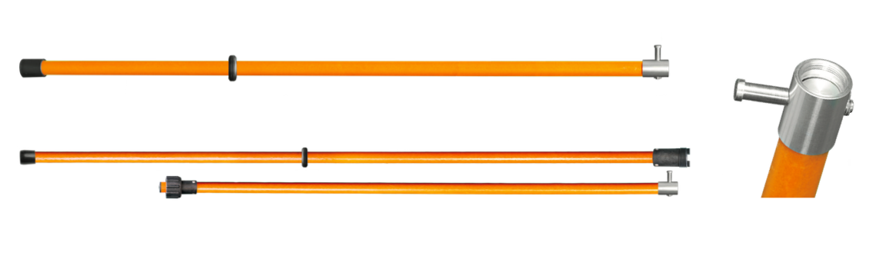
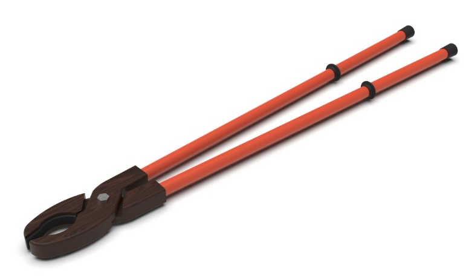

Глава 6: Защитные средства
6.1 Эксплуатационный инструмент
К эксплуатационному инструменту относят штанги, клещи и инструмент для ремонта и монтажа. При надлежащем изготовлении указанный инструмент позволяет безопасно выполнять необходимые операции и работы под напряжением.
- Штанги являются основным средством защиты в установках высокого напряжения и
служат для:
- включения и выключения разъединителей,
- наложения заземления на токоведущие части,
- испытания высоковольтных установок,
- очистки установки от пыли, гололеда и других загрязнений.
 - Штанги должны быть изготовлены только из изолирующего материала, такого как дерево или специальным образом
обработанная бумага (бакелит).
- Для защиты от сырости дерево необходимо пропитывать в вакууме изолирующим составом (масло, парафин) и тщательно обрабатывать поверхность.
- Поверхность бакелитовых штанг полируется и покрывается изолирующим бакелитовым лаком.
- Металлические части штанг допускаются только для соединения изолирующих компонентов и крючков. Для ограничения длины захвата рукой устанавливаются специальные упоры или шайбы. Нанесение пограничной черты для ограничения длины захвата не допускается.
- Штанга должна быть достаточно легкой и удобной для использования. Размер штанги выбирается в зависимости
от величины рабочего напряжения, при котором она будет применяться.
- Практиковавшееся ранее заземление штанг не допускается, за исключением специально заземляющих. Это связано с риском случайного контакта заземляющего провода с токоведущими частями, что может привести к поражению током или аварии.
- Штанги следует хранить в сухом месте, вертикально, на специальных стойках, предотвращающих их контакт со стенами.
- Клещи являются основным средством защиты в установках высокого напряжения.
Они используются для:
- постановки и снятия трубчатых предохранителей под напряжением,
- измерения тока (например, с использованием специальных клещей Дитце).
 - Монтажный инструмент включает в себя клещи, торцовые ключи, отвертки, напильники и другие
подобные инструменты.
- Инструменты должны иметь изолированные ручки, которые обеспечивают безопасность при выполнении работы под напряжением.
- Используется только в установках низкого напряжения.
- Изоляция должна быть механически прочной и электрически надежной, чтобы исключить риск пробоя или повреждения.
Инструменты следует хранить в специальных ящиках с индивидуальными гнездами для каждого предмета.
6.2 Изолирующие защитные средства
Изолирующие подставки, являющиеся основным средством защиты в установках с напряжением до 500 V, служат для изоляции человека от земли при работах под напряжением. Изолирующие подставки нужно применять при всех операциях включения разъединителей, масляных выключателей и постановки предохранителей в установках высокого напряжения, а также при выполнении монтажных работ в установках низкого напряжения. Изолирующие подставки представляют собой деревянный настил, покоящийся на четырех изолирующих ножках.
- Материалы:
- Материалом для настила служит дерево без сучков, хорошо высушенное, окрашенное масляной краской или изолирующим лаком.
- Настил делается из планок, которые располагаются одна от другой на расстоянии не более 2,5 см, или сплошным.
- Ножки изготавливаются из специальных изоляторов высотой 5 см при низких напряжениях и 8 см - при высоких. Металл для соединений не допускается, за исключением крепления изоляторов металлическими болтами.
- Технические требования:
- Края настила не должны выступать за пределы ножек для обеспечения устойчивости.
- Подставки должны обладать механической прочностью, допускающей нагрузку 750 кг/м3.
- Наименьшие размеры подставок для установок с напряжением 1000 В – 0,75 х 0,4 м, а для свыше 1000 В – 0,75 x 0,75 м.
- Условия использования:
- В открытых установках подставку следует устанавливать на твердое основание (бетон, дерево), чтобы изоляторы не погружались в грунт.
Резиновые коврики (маты) являются основным средством защиты только в установках низкого напряжения и дополнительным в установках высокого (до 6000 В). Они, как и подставки, предназначены для изоляции человека от земли.
- Технические характеристики:
- Изготавливаются толщиной 3-5 мм из специальной резины с прослойками из бумажной ткани для увеличения прочности.
- Для установок высокого напряжения толщина коврика должна быть не менее 7-8 мм.
- Особенности:
- Поверхность ковриков шероховатая, чтобы предотвратить скольжение.
- По сравнению с подставками, коврики быстрее изнашиваются и теряют изоляционные качества в сырых и грязных помещениях.
Резиновые боты – основное средство защиты в установках низкого напряжения и дополнительное в установках высокого (до 6000 В).
- Преимущества:
- Они надежнее изолируют от земли по сравнению с ковриками.
- Технические характеристики:
- Изготавливаются двух сортов: для работ под напряжением не выше 750 В и до 6000 В.
- Калоши производятся из специальной резины.
Резиновые перчатки – основное средство защиты в установках низкого напряжения и дополнительное в установках высокого.
- Назначение:
- Изоляция человека при соприкосновении с токоведущими частями под напряжением.
- Используются при всех операциях под напряжением, включая измерительные и монтажные работы.
- Технические характеристики:
- Изготавливаются из резины толщиной не менее 1,3 мм.
- Не допускается использование химических или медицинских перчаток для защиты от тока.
Переносные ограждения – временные щиты или ширмы из сухого дерева, применяемые для защиты от случайного прикосновения к частям установок под напряжением.
- Особенности:
- Изготавливаются без металлических креплений.
- Конструкция должна быть устойчивой, удобной и безопасной.
6.3 Указатели напряжения
Существенным средством, обеспечивающим безопасность работ, производимых на отключенных участках установки (со снятым напряжением), являются указатели или индикаторы напряжения, служащие для обнаружения наличия или отсутствия напряжения. В зависимости от величины рабочего напряжения установки применяют различные типы указателей. По конструкции и изолирующим свойствам они должны соответствовать величине рабочего напряжения:
- Установки с напряжением до 500 В:
- В этих установках допускается непосредственное прикосновение контактных наконечников указателя напряжения к частям установки, находящейся под напряжением.
- Простейшим типом указателя для установок низкого напряжения являются вольтметр и контрольные электрические лампочки, снабженные электрической сеткой.
- Технические требования к проводам указателей:
- Провода должны иметь повышенную изоляцию (типа «магнето»).
- Наконечники должны быть укреплены на изолирующих рукоятках общей длиной не менее 500 мм, с длиной захвата 100 мм, обеспечивающих безопасное пользование указателями.
- Контрольные лампы для напряжения свыше 220 В:
- Во многих случаях применяют так называемые батарейки, представляющие несколько ламп, смонтированных на общем основании.
- Однако такие батарейки громоздки, выполняются кустарно, не обеспечивают удобства и безопасности и, следовательно, не должны применяться.
- Установки выше 500 В:
- Для обнаружения наличия напряжения применяют указатели, работающие от емкостного тока.